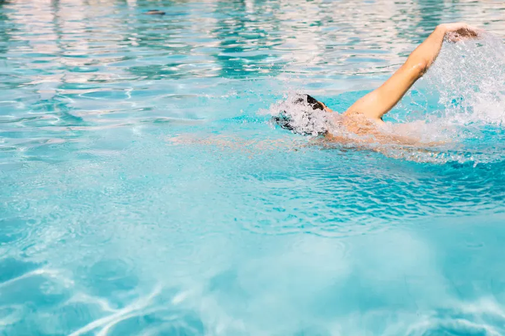
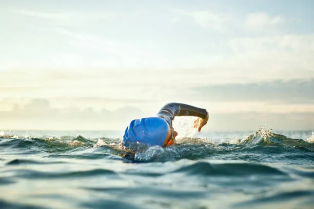

El Inicio de todo
La natación es el conjunto de técnicas que permiten al ser humano nadar, es decir, el movimiento y desplazamiento dentro y sobre el agua empleando los brazos y las piernas, sin aditamentos o ayudas mecánicas de ningún tipo. Se trata al mismo tiempo de una práctica deportiva, recreativa o de supervivencia. Entendida como un deporte, la natación es uno de los más practicados del mundo, con presencia entre las disciplinas olímpicas en piscinas de distinta longitud: 50, 100, 200, 400, 800 y 1500 metros. Las técnicas de nado específicas se conocen como estilos y poseen nombres particulares. La natación es, además, una herramienta útil para la vida en general, que permite la recreación y facilita la supervivencia en cuerpos de agua profunda.

Ténicas de nado
Crol
El estilo libre, comúnmente conocido como crol, es el estilo más rápido y popular en la natación competitiva. En este estilo, los/as nadadores/as se desplazan boca abajo en el agua y realizan un movimiento alternado de brazos, mientras las piernas realizan un movimiento de patada ondulante. La respiración se realiza de forma lateral, girando la cabeza hacia un lado para tomar aire mientras se realizan las brazadas.
Espalda/Dorso
Los/as nadadores/as se desplazan sobre su espalda en el agua. Los brazos se mueven alternadamente en un movimiento circular similar al estilo libre, mientras que las piernas realizan una patada de crol. La cabeza se mantiene en posición neutral, con la cara hacia arriba, y los/as nadadores/as respiran de forma natural girando la cabeza hacia un lado en cada brazada.

Braza/Pecho
Es conocida por su característico movimiento de “tracción y empuje” de los brazos, acompañado de una patada de rana. Durante la fase de tracción, los brazos se mueven hacia adentro desde una posición extendida frente al/la nadador/a hasta el pecho, mientras que las piernas realizan una patada sincronizada. Luego, los brazos se empujan hacia afuera y hacia adelante mientras las piernas se juntan para completar el ciclo de la brazada.
Mariposa
La mariposa es uno de los estilos más técnicamente exigentes en la natación. En este estilo, los/as nadadores/as comienzan boca abajo en el agua. Los brazos están extendidos hacia adelante por encima de la cabeza, las piernas están juntas y los pies están apuntando hacia afuera ligeramente. El movimiento de los brazos en la mariposa es simultáneo y simétrico. Ambos brazos se mueven hacia adelante desde la posición extendida hacia adelante hasta que están completamente extendidos bajo el agua. Luego, ambos brazos se llevan hacia afuera y hacia arriba en un movimiento circular, saliendo del agua al mismo tiempo. Una vez fuera del agua, los brazos se vuelven a extender hacia adelante para iniciar el siguiente ciclo de brazada.